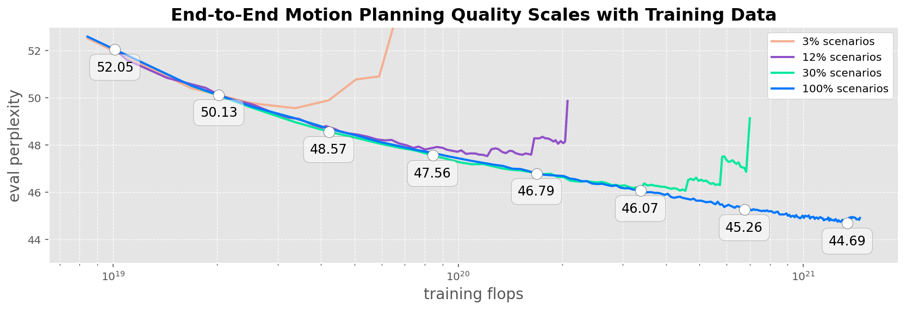
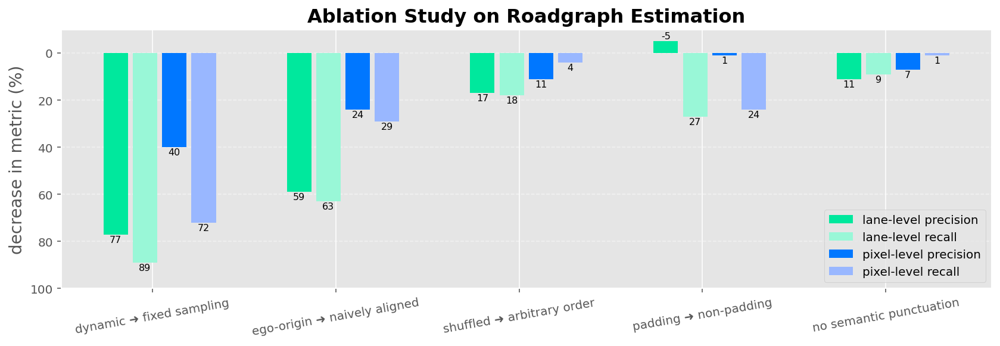
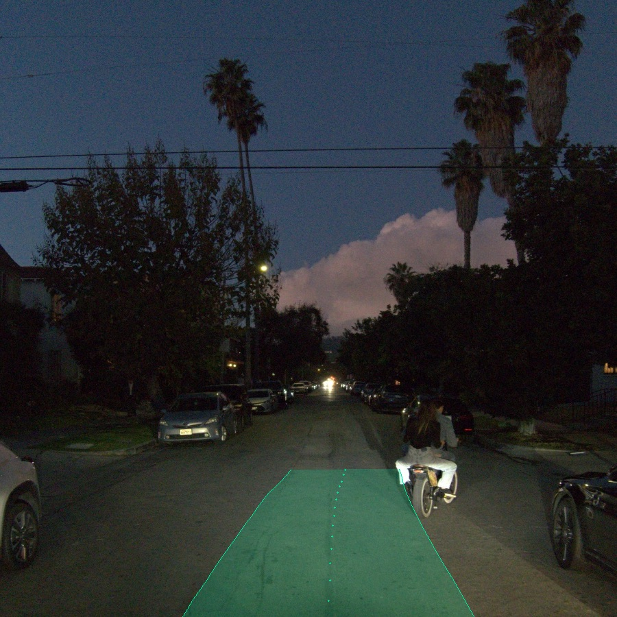
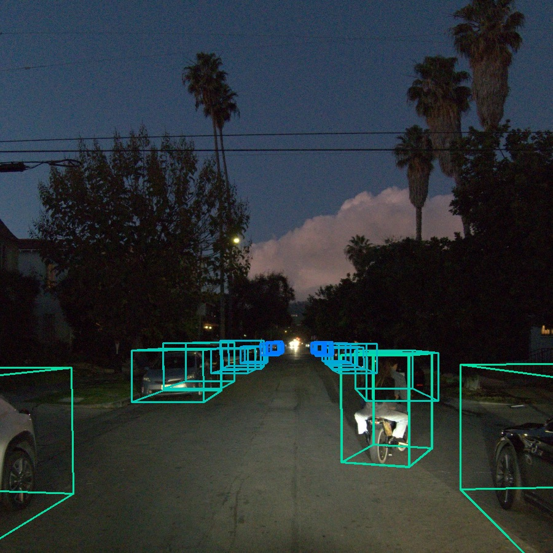
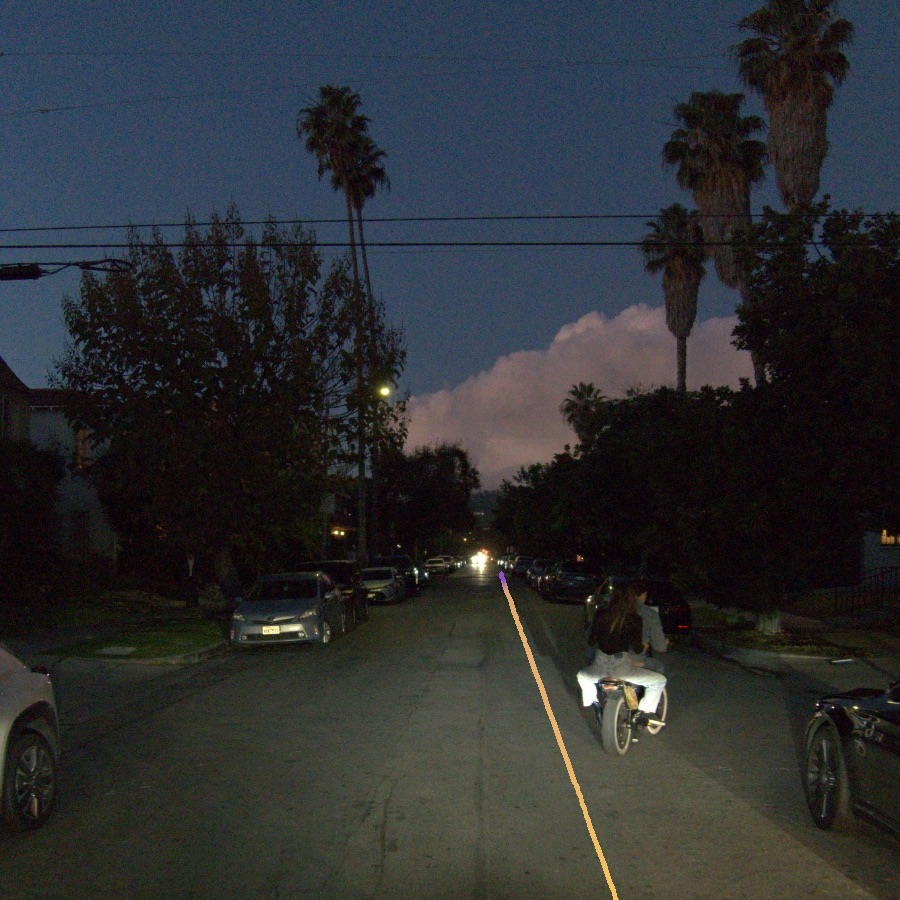
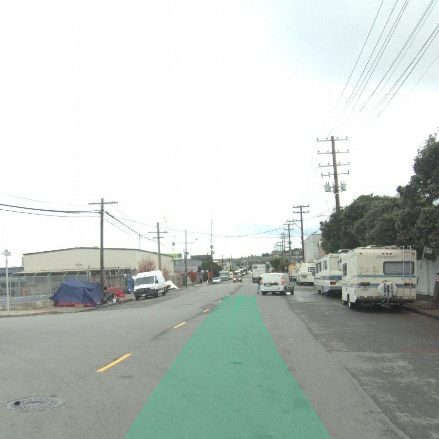

0. 页面头部：论文身份卡片
| 论文 | EMMA: End-to-End Multimodal Model for Autonomous Driving |
|---|---|
| 作者 | Hwang, Jyh-Jing；Xu, Runsheng；Lin, Hubert；Hung, Wei-Chih；Ji, Jingwei；Choi, Kristy；Huang, Di；He, Tong；Covington, Paul；Sapp, Benjamin；Zhou, Yin；Guo, James 等 |
| 时间 | 2024/10/30 |
| 方向 | MLLM generalist / end-to-end planning |
| 核心贡献 | EMMA 基于多模态大语言模型，把导航、ego 状态、轨迹、3D 位置、检测和道路图输出都文本化，在同一语言空间中统一规划、感知和道路理解任务。 |
| 模型类型 | 以统一多模态生成模型同时承担端到端运动规划、3D 检测和道路图估计，研究通用模型是否能覆盖自动驾驶多种输出接口。 |
| 输入 | 环视相机视频、高层路线命令和 ego 历史状态；不同任务通过文本 prompt 指定。 |
| 中间表示 | 多模态大模型把视觉与状态编码到共享 token 空间，各任务的几何对象、道路图与轨迹均文本化或序列化。 |
| 输出 | 未来 ego 轨迹、3D 对象、道路图以及相应文本式结构化预测。 |
| 训练目标 | 自回归 next-token 目标统一多任务监督，并对规划轨迹采用多样采样与候选选择。 |
| 代码与复现状态 | 否，论文公开但模型/训练数据主要依赖 Gemini 与内部数据；高：适合研究 MLLM generalist 在自动驾驶中的任务统一 |
1. 论文速览：用一页讲清楚价值
1.1 一句话贡献
EMMA 基于多模态大语言模型，把导航、ego 状态、轨迹、3D 位置、检测和道路图输出都文本化，在同一语言空间中统一规划、感知和道路理解任务。
1.2 论文专属关键词
EMMA、Gemini、MLLM generalist、textual trajectory、camera-only planning、CoT rationale、nuScenes、Waymo Open Motion Dataset
1.3 技术定位
以统一多模态生成模型同时承担端到端运动规划、3D 检测和道路图估计，研究通用模型是否能覆盖自动驾驶多种输出接口。
1.4 论文构建了什么
| 输入 | 环视相机视频、高层路线命令和 ego 历史状态；不同任务通过文本 prompt 指定。 |
|---|---|
| 编码与融合 | 多模态大模型把视觉与状态编码到共享 token 空间，各任务的几何对象、道路图与轨迹均文本化或序列化。 |
| 输出 | 未来 ego 轨迹、3D 对象、道路图以及相应文本式结构化预测。 |
| 训练目标 | 自回归 next-token 目标统一多任务监督，并对规划轨迹采用多样采样与候选选择。 |
1.5 核心结论与证据链
EMMA 的核心不是再训练一个专用 planner，而是把自动驾驶多任务统一成多模态 prompt-to-text 生成：输入为高层命令、ego 历史状态和环视相机视频，输出可以是未来 ego 轨迹、对象 3D 位置、道路图元素或带 grounding 的决策 rationale。论文报告 EMMA 在 nuScenes motion planning 达到 SOTA，并在 WOMD、WOD camera-primary 3D 检测和 road graph 任务上有竞争力；co-training 规划、检测和道路图任务可互相增益。作者也明确指出局限：只能处理少量图像帧，不使用 LiDAR/radar，计算成本高，真实车部署面临推理延迟。
核心证据来自：数据 scaling 曲线、采样数量消融、3D 检测与道路图结果、多任务定性预测和明确失败案例。。证据边界是：内部大规模数据不可完整复现；检测/道路图与规划共享模型的收益未等同于闭环安全收益。
2. 研究问题与动机：为什么需要这篇论文
2.1 核心问题与成功标准
模块化自动驾驶在 perception、prediction、planning 之间传递结构化中间结果，容易产生级联误差和信息瓶颈。端到端 planner 又往往缺少通用世界知识，难以解释复杂场景。EMMA 假设 MLLM 预训练得到的世界知识和语言推理能力可以成为自动驾驶 generalist 的底座；为了让模型统一处理数值轨迹和空间对象，作者把非传感器输入和输出转成自然语言 token，而不是增加多个独立任务头。
2.2 现有方法的具体不足
该论文针对的瓶颈不是笼统的“泛化不足”，而是：为每个任务训练独立网络会重复计算且难共享语义；但纯文本化几何可能损失连续精度，因此 EMMA 依赖结构化解码与大量数据。
2.3 为什么不走显而易见的替代路线
为每个任务训练独立网络会重复计算且难共享语义；但纯文本化几何可能损失连续精度，因此 EMMA 依赖结构化解码与大量数据。
3. 相关工作脉络：这篇论文从哪里来
3.1 技术家族与直接前作
EMMA 与 GPT-Driver 都把轨迹语言化，但 GPT-Driver 更像 GPT-3.5 motion planner，输入依赖结构化感知；EMMA 则从 camera video 直接到规划/检测/道路图多任务。它也不同于 DriveVLM 的 dual-system，因为 EMMA 更强调一个 MLLM generalist 统一多任务输出。与传统 Wayformer/MotionLM 相比，EMMA 使用 camera 和 ego 历史，减少对高质量 LiDAR/road graph/agent labels 的依赖。
3.2 本文新意属于表示、架构、训练还是评估
从技术地图看，本文的主要新意可概括为：以统一多模态生成模型同时承担端到端运动规划、3D 检测和道路图估计，研究通用模型是否能覆盖自动驾驶多种输出接口。。它并非简单替换 backbone，而是围绕输入表示、中间信息流或评价方式重新定义了论文的核心问题。
4. 方法总览图：先看完整信息流
4.1 主框架图与机制

4.2 信息流一句话串联
输入：环视相机视频、高层路线命令和 ego 历史状态；不同任务通过文本 prompt 指定。；中间处理：多模态大模型把视觉与状态编码到共享 token 空间，各任务的几何对象、道路图与轨迹均文本化或序列化。；最终输出：未来 ego 轨迹、3D 对象、道路图以及相应文本式结构化预测。；训练约束：自回归 next-token 目标统一多任务监督，并对规划轨迹采用多样采样与候选选择。
5. 方法详解：输入、表示、融合、解码、训练与部署
5.1 输入表示
环视相机视频、高层路线命令和 ego 历史状态；不同任务通过文本 prompt 指定。。复现时首先要确保各模态的时间同步、坐标系、可见范围与训练时一致；任何一个上游输入偏移都可能被后续大模型放大。
5.2 编码器与融合设计
多模态大模型把视觉与状态编码到共享 token 空间，各任务的几何对象、道路图与轨迹均文本化或序列化。
5.3 中间表示为何重要
中间表示决定模型保留何种几何、语义和时间信息。该论文的关键中间链路是：多模态大模型把视觉与状态编码到共享 token 空间，各任务的几何对象、道路图与轨迹均文本化或序列化。。它让最终输出能够利用这些信息，但也把上游表示误差带入规划或预测。
5.4 解码、动作生成或未来预测
未来 ego 轨迹、3D 对象、道路图以及相应文本式结构化预测。
5.5 训练目标及副作用
自回归 next-token 目标统一多任务监督，并对规划轨迹采用多样采样与候选选择。。这些目标直接约束对应监督输出，却不会自动保证真实闭环安全、跨域鲁棒性或因果可解释性。
5.6 训练阶段与数据风险
EMMA 采用多模态大模型作为骨干，将图像帧编码为视觉上下文，把导航命令和 ego 状态写入文本 prompt。规划时，模型生成候选未来 waypoint 序列，并可同时生成 CoT rationale 与 critical object grounding；generalist 设置中，task prompt 决定输出格式，例如 planner trajectory、3D object、road graph element。训练目标是自回归文本预测，输出再由解析器转回轨迹或结构化对象。多任务 co-training 让视觉表征共享规划、检测、道路拓扑约束。推理时可采样多条轨迹，论文 Fig.3 显示候选数量增加能改善 ADE@5s，但超过约 12 条收益递减。
5.7 推理与部署流程
论文聚焦大规模离线数据与 Waymo Open Dataset 指标；从轨迹到真实控制仍需要下游控制器。
6. 原论文图解：逐图拆解证据含义
7.1 Figure 1：\model\ overview diagram. It takes 3 inputs (left): 1) a hig
7.2 Figure 2：Illustration of \model\ Generalist. Starting with a task pro

7.3 Figure 3：Ablation study on the number of sampled trajectories. As mor

7.4 Figure 4：\model\ data scaling experiments on our mega-scale internal

7.5 Figure 6：Ablation study on road graph estimation. To evaluate the inf

7.6 Figure 12：Failure examples of \model\ prediction. Each row contains a




7. 实验与结果：把证据链拆开
7.1 数据集、任务与划分
实验围绕该论文的技术定位组织：以统一多模态生成模型同时承担端到端运动规划、3D 检测和道路图估计，研究通用模型是否能覆盖自动驾驶多种输出接口。。需要特别区分离线预测、生成质量、开环规划与真实/仿真闭环，因为它们使用不同成功标准；本论文主要证据为：数据 scaling 曲线、采样数量消融、3D 检测与道路图结果、多任务定性预测和明确失败案例。
7.2 Baseline 为什么重要
论文的比较应围绕其技术定位理解：以统一多模态生成模型同时承担端到端运动规划、3D 检测和道路图估计，研究通用模型是否能覆盖自动驾驶多种输出接口。。强 baseline 用来判断收益来自新增信息流、模型容量还是评估协议；仅与较弱旧方法比较不足以证明论文主张。
7.3 指标如何对应论文主张
本文实验所依赖的证据为：数据 scaling 曲线、采样数量消融、3D 检测与道路图结果、多任务定性预测和明确失败案例。。离线预测误差、生成质量、规划指标或闭环分数各自只衡量部分能力，不能互相替代。
7.4 主结果与机制是否一致
实验覆盖内部规划 benchmark、nuScenes、WOMD 和 WOD。论文 Table 2 中 MotionLM* 在 5s L2 为 0.696、Wayformer* 为 0.628；EMMA+ w/ CoT 被报告在 5s horizon 相对之前 SOTA 有 13.5% 提升。关键消融包括基础 MLLM、是否使用 CoT、是否使用大规模内部数据、采样轨迹数量和多任务 co-training。定性图展示模型能把 cyclist/vehicle 等 critical objects 写进 rationale 并输出未来 waypoint。证据缺口是内部数据和 Gemini 权重不可完全复现，开源社区很难确认同等规模下的训练收益。
8. 消融、失败案例与证据缺口
8.1 消融实验应回答什么
最关键的消融需要隔离该论文的核心信息流：数据 scaling 曲线、采样数量消融、3D 检测与道路图结果、多任务定性预测和明确失败案例。。如果去掉核心模块后只在部分指标下降，需要进一步判断收益是否集中于特定场景。
8.2 失败案例与证据缺口
内部大规模数据不可完整复现；检测/道路图与规划共享模型的收益未等同于闭环安全收益。
8.3 论文没有证明什么
现有结果不能直接推出：内部大规模数据不可完整复现；检测/道路图与规划共享模型的收益未等同于闭环安全收益。
9. 复现要点：真正动手会遇到什么
9.1 最小可行复现路线
最小可行复现应退化为 open-source MLLM 版本：用 PaLI/LLaVA/Qwen-VL 类模型，构造 camera + ego state prompt，将轨迹离散/文本化，训练生成未来 waypoints；再增加 object/road graph prompt 做多任务 co-training。需要 nuScenes/WOMD/WOD 数据、图像帧抽取、轨迹字符串解析和候选轨迹采样器。硬件门槛较高，瓶颈是长上下文视频帧和 MLLM fine-tuning。验收标准是规划 L2/ADE、检测 AP、road graph 结构指标分别能体现 co-training 正增益。
9.2 数据、模型、硬件与阻塞点
数据与接口重点：环视相机视频、高层路线命令和 ego 历史状态；不同任务通过文本 prompt 指定。。模型重点：多模态大模型把视觉与状态编码到共享 token 空间，各任务的几何对象、道路图与轨迹均文本化或序列化。。部署重点：论文聚焦大规模离线数据与 Waymo Open Dataset 指标；从轨迹到真实控制仍需要下游控制器。。论文未明确披露的硬件与训练成本不在此推测。
9.3 验收标准
复现成功不应只以脚本运行结束为标准，而应至少复现论文核心趋势：数据 scaling 曲线、采样数量消融、3D 检测与道路图结果、多任务定性预测和明确失败案例。；同时检查输出是否在论文声称的边界外快速退化。
10. 分析、局限与边界：作者没说完的部分
10.1 最有价值贡献
EMMA 最重要的贡献是把“驾驶输出也是语言”做成统一接口，这让 planner、detector、map head 能共享 MLLM 推理空间。证据支持 MLLM generalist 在开环任务上的潜力，但不能说明模型可直接上车：帧数、传感器缺失、延迟和内部数据依赖都是硬边界。下一步可以研究轻量蒸馏、低延迟解码、VLA-style action head，以及用可验证安全层约束文本轨迹。
10.2 主张—证据—充分性
| 论文主张 | 以统一多模态生成模型同时承担端到端运动规划、3D 检测和道路图估计，研究通用模型是否能覆盖自动驾驶多种输出接口。 |
|---|---|
| 支撑证据 | 数据 scaling 曲线、采样数量消融、3D 检测与道路图结果、多任务定性预测和明确失败案例。 |
| 充分性判断 | 对论文评测范围内的机制结论较有支持；对真实闭环、跨域或安全泛化仍不足。 |
| 原因 | 内部大规模数据不可完整复现；检测/道路图与规划共享模型的收益未等同于闭环安全收益。 |
10.3 可行改进方向
测试任务梯度冲突；加入闭环安全 critic；比较文本几何 token 与 BEV/occupancy 连续 latent。
10.4 后续实验建议
| 核心模块去除/替换 | 隔离论文主张，观察核心指标是否按预期下降 |
|---|---|
| 跨域或扰动测试 | 检查方法是否依赖训练分布和干净输入 |
| 闭环 rollout | 观察误差累积、碰撞与恢复 |
| 不确定性/安全验证 | 识别高风险预测并建立 fallback |
11. 组会问答准备
Q: EMMA 为什么把轨迹写成文本？
A: 这样可以让 MLLM 用同一自回归语言目标生成轨迹、对象和道路图，避免为每个任务设计独立输出头。
Q: CoT 在 EMMA 中的作用是什么？
A: 它让模型先写出 critical objects 和 driving rationale，再生成轨迹，提升解释性并改善长时域规划质量。
Q: EMMA 和 MotionLM/Wayformer 的输入差异？
A: MotionLM/Wayformer使用 agent history、road graph、traffic lights 等强结构输入；EMMA 强调 camera + ego history 和 MLLM 预训练。
Q: 为什么难复现？
A: 核心 Gemini 权重和 mega-scale 内部数据不可得，完整结果只能通过论文报告验证。
Q: 最大部署瓶颈？
A: 大模型推理延迟、少帧输入、没有 LiDAR/radar 精确深度，以及安全验证缺失。
12. 我的阅读笔记：转成自己的研究素材
12.1 最值得借鉴的点
EMMA 是“自动驾驶 generalist MLLM”的关键对照。可作为 OpenEMMA/OpenDriveVLA 的上游思想来源：文本化输出能统一任务，但复现应优先用开源 MLLM + 小数据验证机制，而不是追求论文绝对数值。
12.2 与同目录论文的比较钩子
可从“语言是否直接影响动作、是否显式预测未来世界、是否真实闭环、是否保留 3D 几何、是否使用 agent/tool/memory”五条轴与同目录论文比较。本文的定位为：以统一多模态生成模型同时承担端到端运动规划、3D 检测和道路图估计，研究通用模型是否能覆盖自动驾驶多种输出接口。
12.3 可行动创新点
测试任务梯度冲突；加入闭环安全 critic；比较文本几何 token 与 BEV/occupancy 连续 latent。
13. 附录图解与证据索引
本文使用的原始图件均来自 arXiv 源码，图注保留或准确转述。其他附录图未被机械堆入页面；只有能够解释方法、结果、消融或失败的图件才被选择。